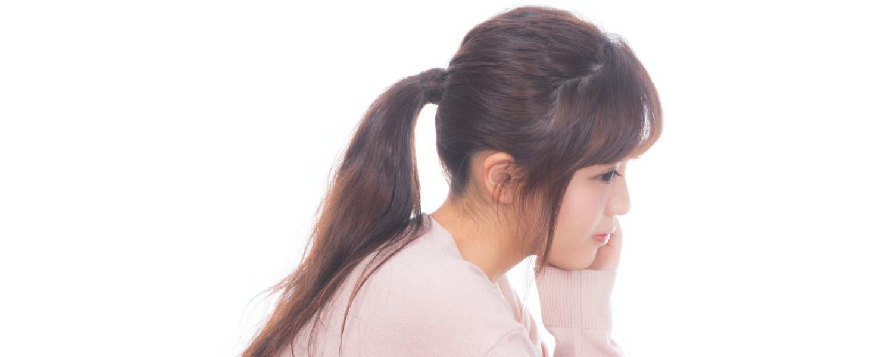
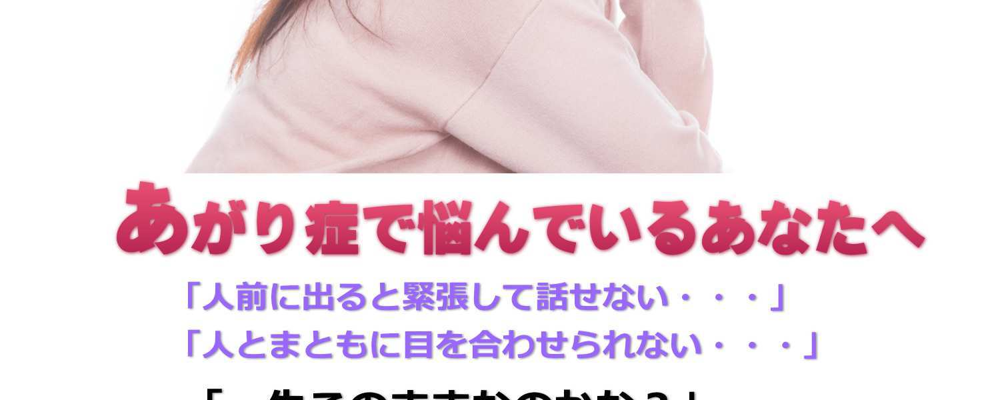
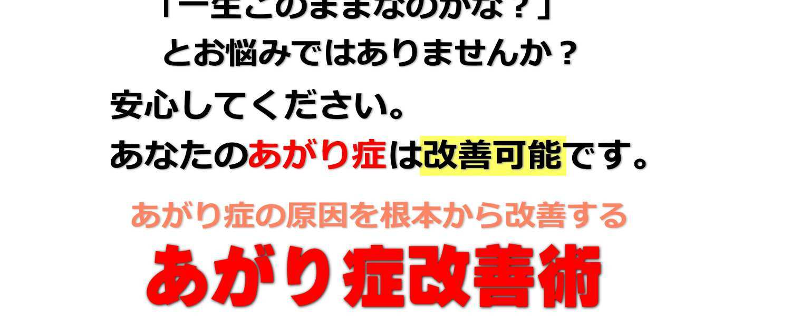
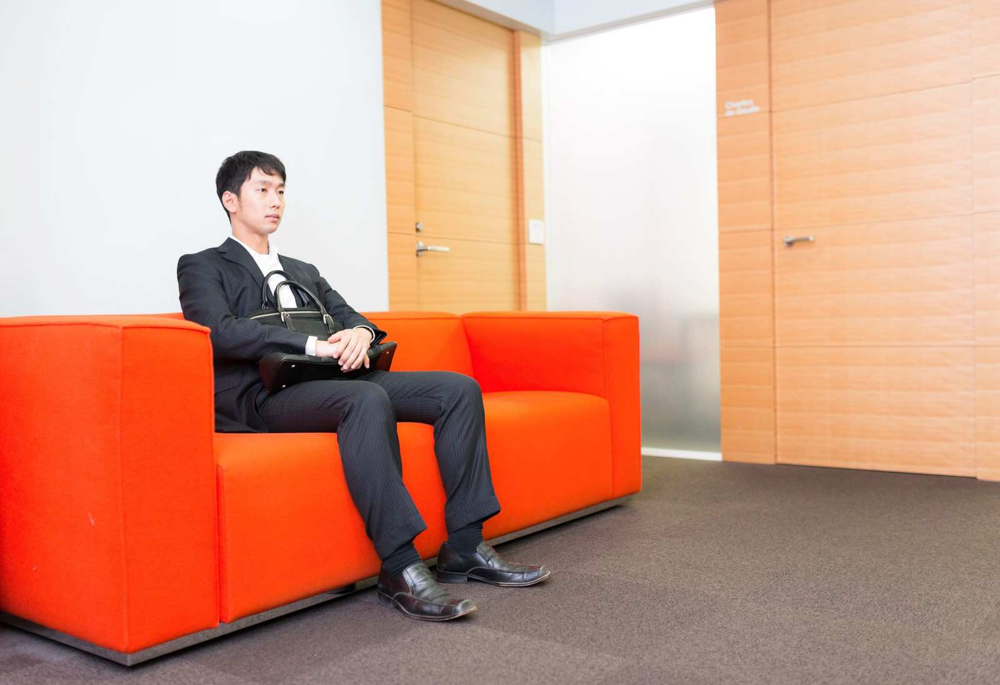

このレポート上に書かれている URL はクリックできます。できない場合は最新の AdobeReader をダウンロードしてください。（無料）
http://www.adobe.co.jp/products/acrobat/readstep2.html
◆ 著作権について
当レポートは、著作権法で保護されている著作物です。使用に関しましては、以下の点に ご注意ください。
◇ レポートの著作権は、作者にあります。作者の書面による事前許可なく、本レポート の一部、または全部をインターネット上に公開すること、およびオークションサイトなど で転売することを禁じます。
◇ 本レポートの一部、または全部をあらゆるデータ蓄積手段（印刷物、電子ファイル、 ビデオ、ＤＶＤ、およびその他電子メディアなど）により複製、流用および転載すること を禁じます。
◆ 使用許諾契約書
本契約は、レポートダウンロードした法人・個人（以下、甲とする）と作者（以下、乙と する）との間で合意した契約です。
本レポートを甲が受けとることにより、甲はこの契約は成立します。
第 1 条（目的） 本契約は、本レポートに含まれる情報を、本契約に基づき、甲が非独占的 に使用する権利を承諾するものです。
第 2 条（第三者への公開の禁止） 本レポートに含まれる情報は、著作権法によって保護さ れています。また、本レポートの内容は、秘匿性の高い内容であり、甲はその情報を乙と の書面による事前許可を得ずにいかなる第三者にも公開することを禁じます。 第 4 条（損害賠償） 甲が本契約の第 2 条の規定に違反した場合、本契約の解除に関わら ず、甲は乙に対し、違約金として、違反件数と金壱萬円を乗じた価格の 10 倍の金額を支払 うものとします。
第 5 条（その他） 当レポートに沿って実行し、期待通りの効果を得ることができず、万一 如何なる損益が生じた場合でも、乙は甲に対して責任を負わないものとする。 著者および発⾏者はこのE-BOOK を執筆するにあたり最⼤限の努⼒をしています。
著者および発⾏者は、このE-BOOK の内容の精度や適⽤性、適合性、完全性についてはい
かなる保証もいたしません。このE-BOOK の情報は教育を目的としているものです。
したがって、このE-BOOK にあるアイデアを適⽤する場合の全責任は利⽤者ご⾃⾝で負う
ものとします。
著者および発⾏者は、いかなる特定⽤途のためにもその保証（明⽰的であれ暗⽰的であ
れ）や商品性、適合性を否認いたします。
著者および発⾏者は、このE-BOOK を使⽤することで直接あるいは間接的に発生する、直
接的、間接的、懲罰的、特別、付随的、またはその他の派生的損害について、いかなる責
任も負わないものとします。
また内容は現状のまま、保証なしで提供されるものとします。常に適任とされる専門家の
アドバイスを求めるようにしてください。
著者および発⾏者は、このE-BOOK で記載されたサイト一覧やリンクの性能、有効性につ
いてはいかなる保証もいたしません。
全てのリンクは情報目的だけに⽤いられており、その内容や精度、他のいかなる目的につ
いても保証されるものではありません。
一般的に言われる、あがり症とは色々な神経症の症状の総称です。
身体的な症状がでる神経症しては人前に出ると顔が異常に赤くなる
症状がでる赤面症や、人前に出ると顔や脇などに大量の汗をかき、
それが止まらなくなる症状の多汗症があります。
これらは緊張により身体が異常に反応してしまうことで起こる症状
で、見た目にもその変化が分かりやすく自分でも症状を認識しやす
いあがり症となります。 う神経症の症状もよくあるあがり症の症状となります。
対人不安は会社や学校などで上司や同僚、先生、同級生、上級生と
合う前に不安に駆られてしまう症状で、気分的に憂鬱になるという
特徴があります。
対人緊張は人と関わる際に必要以上に緊張してしまう症状で、赤面
症や多汗症と同じくあがり症の症状の中でも最も多い症状となりま
す。
基本的にあがり症は、対人緊張が元となり他の神経症の症状が出る あがり症には他にも、人と接するときに手足が震えてしまいそれが
止まらなくなる震え恐怖症や、人と接する際に相手を直視すること
が出来ない正視恐怖症、逆に相手に視線を向けられるとうまく接す
ることができなくなる視線恐怖症もあがり症の神経症の一つです。
正視恐怖症と視線恐怖症の両方の神経症がある場合には、相手を見
ることも見られることも恐怖を感じてしまい緊張する為、あがり症
の症状としては重いものとなります。 ないという吃音症もあがり症に多く現れる症状です。
電話に出る時や大勢の前でスピーチなどを行う場合に言葉がうまく
出なかったらどうしようという不安からこの吃音症という神経症の
症状が発症しやすくなります。
これら以外にも異性に対して苦手意識を感じる男性恐怖症や女性恐
怖症などもあがり症の神経症の症状となります。
あがり症は珍しいものではなく、非常に多くの人が悩んでいる症状
なのです。
なぜ、あがり症という症状が発症するのでしょうか？
これにはあがり症になるメカニズムが存在しており、体の中で起き
ている変化が表面的にあらわれることであがり症という状態になっ
てしまうわけです。
このあがり症のメカニズムを正しく知ることにより、どうすればあ ニズムがおきないように予防をすることも可能になります。
あがり症で悩んでいる場合は、まずメカニズムを理解することから
始めることがあがり症を改善するためのポイントとなります。
・あなたの脳で何が起こっているのでしょう
人間の行動は全て脳から発せられる電気信号によりおこなわれてい
ます。そして、状況に応じて脳から様々な物質が分泌され、その状
況に合わせた行動を取りやすくしてくれます。
例えば楽しかったり、嬉しかったりと、幸せを感じるような状況で
あれば、脳内ではセロトニンという物質が分泌されます。 セロトニンが分泌されることによって、嬉しい、幸せという感情を
更に高めてくれます。この効果によって、私たちは日常の生活での
喜びをより大きく感じることになり、人生を充実させてくれるため
の重要な機能といえます。
恐怖や不安、緊張を感じた時には、脳内でノルアドレナリンという
物質が分泌されることになり、交感神経を刺激することでその恐怖
や不安に対して体が反応できるように準備をすることになります。
このノルアドレナリンが分泌された時の体の反応があがり症の身体 うことは決しておかしなことではありません。
もしも、ノルアドレナリンが分泌されなければ危険を察知しそれを
回避するということも出来なくなってしまいます。
そのため脳から分泌されるノルアドレナリンは私たちが生きていく
上で欠かせないものなのです。
・あがり症のメカニズム
ではそのノルアドレナリンがどのように影響してあがり症と言う症
状が発症するのでしょうか。 う、声がでない、という症状が現れます。
これは緊張することにより脳内でノルアドレナリンを分泌する信号
が出ることになり、分泌されたノルアドレナリンが交感神経に作用
して自己防衛本能が働くことになります。
その自己防衛本能が手足の震えや汗をかくといった状態を引き起こ
すことになります。
何故こういった状態になるのかといえば、ノルアドレナリンが分泌
されることにより体の中では血管の拡張や血流の変化、心拍数の上
昇や体温の変化が現れます。 作り出すことになります。
ただこのノルアドレナリンの分泌は人によってその量も異なります
し、同じ状況に置かれた場合でもそれを恐怖と感じていなければ分
泌されることはありません。
不安を感じるというケースにおいても必要以上に不安を感じていな
ければノルアドレナリンの分泌量は少なくなり、体に及ぼす影響も 低下することになります。
あがり症になりやすい人
あがり症の症状があらわれやすい人は、ストレスを抱えている場合
やストレス耐性が低い人のほうが多いといえます。
何故ならストレスと言うのは受けることやため込むことで交感神経
に影響を及ぼし、体の緊張状態を作り出してしまうためです。
ストレスをうけた場合にもあがり症の症状を引き起こすノルアドレ
ナリンが分泌されますので、通常の人よりも更にあがり症の症状
が出やすい下地が整っていることになります。 り症の症状もさらに酷い状態になることが考えられます。
ある程度のノルアドレナリンの分泌であれば自分で行動をコントロ
ールすることも可能ですが、過剰に分泌されすぎてしまうとコント
ロールがきかなくなり、自分ではどうしようもない状態に陥ってし
まいます。
そのためストレスによるノルアドレナリンの分泌というメカニズム
があがり症のメカニズムに関係することは間違いありませんし、そ
れによってさらにあがり症が酷くなる恐れもあるわけです。 をして不安を煽ってしまうということがあります。
また同じ失敗をしたらどうしようといった精神的な不安がノルアド
レナリンの分泌量を増やすことになり、それが影響してあがり症の
症状を酷くしてしまうことがあります。
人は学習することで毎日の生活で失敗をしないようにすることが出
来ますが、その学習がマイナスに働くこともあります。
それが過去の失敗からの予期不安という状態で、失敗を予期してし の変化が起きてしまうため、過去の記憶が意識していないのに不安
を助長してしまうことになります。
失敗をしたことが無い人はあがり症の症状を発症することが少ない
のも、過去の記憶が影響していないためだと考えられます。
その証拠にあがり症は子供の発症は非常に少なく、ほとんどが 12 歳
以上になってから発症します。
このようにあがり症のメカニズムは様々なものが影響することにな
りますが、基本的にはノルアドレナリンの分泌が深く関わっている と言えます。
この量が増えれば増えるほど深刻なあがり症といえますし、放置し
ておけばさらに症状が悪化することも考えられるので、メカニズム
を正しく理解し自分がそれに当てはまるかどうかを確認する必要が
あるでしょう。
上記以外であがり症になりやすい人の特徴としては
・成功願望がある人
・受容願望がある人 ・成功願望がある人
誰しも何かを成功させたいという願望は持っているものです。
失敗するよりは成功したいですよね。
成功すれば、誰かに怒られたり、批判されたりすることはありませ
ん。しかし、もし失敗してしまえば、恥ずかしい思いをしますし、
他者からの批判や叱責があったり、誰かに嫌われることもあるかも
しれません。
この成功願望と、失敗への恐れがあがり症を引き起こしている可能 「成功したい、成功しなければいけない、うまくやらなければ」
という成功のための思いが、
「失敗したらどうしよう」
という考えに変わってしまうのです。
失敗を恐れる思いが不安や恐怖となり、個々の中でどんどん膨らん
でいきあがり症の症状となってあらわれてしまうのです。
・受容願望が強い人
受容願望とは誰かに認められたい、受け入れられたいという願望で
す。上でお話した成功願望と関係することも多く、 「これに成功したら認めてもらえる、受け入れてくれる」
という考え方になります。
この受け入れられたいという気持ちが強すぎるため、成功にこだわ
りすぎ、その失敗を恐れすぎてしまうのです。
その結果あがり症を発症してしまいます。
これは生まれつきこのような性格だったというよりは、育った環境 や社会での経験によるものが大きいといわれています。
あがり症セルフチェック
あがり症は神経症の総称です。
そのため多種多様な症状があります。
自分がどの症状にあてはまるのかをここでチェックしてみましょう。
あがり症の主な症状
・対人恐怖症
人前に出ると不安や恐怖を感じる。
・発汗恐怖症
人と接したとき、顔や手など体に大量の汗をかく 人と面と向き合った時に自分の視線が気になり相手を正視できない。
・他者視線恐怖症
自分の容姿やふるまいが、他者からどう見えているか、どう思われ
ているかが気になり緊張する。
・自己視線恐怖症
自分の視線が他者に不快感を与えているのではないかと気になる。
・赤面症
人前にでると顔や耳が赤くなる。 ・予期不安
まだ起きていないことやこれからおこなうことに対して不安になる。
・吃音症
会話の途中で言葉が詰まりどもってしまう。
・震え恐怖症
人前に出ると、手足や体、声が震えてしまう。
・唾恐怖症
人と接する時に唾をうまく飲み込めず、すぐに喉が渇いてしまう。 笑うと顔が引きつったり、こわばってしまう。
・電話恐怖症
電話をするのが嫌だったり、電話のやり取りを周囲の人に聞かれて
いないかと過剰に意識してしまう。
・会食恐怖症
人と一緒に食事をすると吐き気やめまいなど気分が悪くなる。
・スピーチ恐怖症 自分が注目されるような場面で緊張して声や手足が震える。
あがり症改善法
あがり症で悩んでいる人は非常に多く、これまでその原因はその人
の性格の問題だと考えられてきました。その人の性格や育ってきた
環境、とりまく環境が影響するのは確かですがそれ以外にも様々な
原因があることがわかってきています。
その一つが脳内神経伝達物質のセロトニンが減少することなのです。
・セロトニンとは
脳内神経伝達物質には、主に
ドーパミン セロトニン
の３つがあり、それぞれ違った役割があります。
ドーパミンは快感や喜び、興奮などを受け持つ伝達物質です。
ノルアドレナリンは不安や恐怖、それに意欲を全身に伝える役割が
あります。
セロトニンは、これらの伝達物質が過剰に働いた時に抑制する働き
があります。このセロトニンが減少すると感情がコントロールでき
にくくなったり、必要以上に恐怖や不安を感じてしまい、全身を緊
張させる原因となります。 あがり症の場合にも著しいセロトニンの減少が見られ、セロトニン
の減少を抑えたり増加させることで、あがり症改善の対策となるこ
とが近年わかってきました。
つまり、あがり症は精神的な改善法だけではなく、セロトニンによ
っても改善できるのです。
・セロトニン不足セルフチェック
あなたがセロトニン不足かどうかをセルフチェックしてみましょう。
以下項目で、４，５個以上当てはまったらあなたはセロトニン不足 ・イライラすることが多い
・疲れやすい
・寝つきが悪い
・夜中によく目が覚める
・緊張しやすい
・朝食は食べないことが多い
・何をするにも億劫だ
・顔のたるみが気になる
・猫背である ・たくさん食べても満足できない
・太り気味
・定期的に運動をしていない
・頭痛、生理痛がある
セロトニンが不足する原因
・ストレス
セロトニンが不足する大きな原因になるのがストレスです。
ストレスを感じたり落ち込んだりすることは誰にでもあることです みも治るものです。
しかし、一過性のストレスではなく、持続的にストレスを受け続け
るとその限りではありません。
例えば職場でのパワハラや、学校でのイジメ、人間関係のもつれな
ど、長期間に渡って慢性的なストレスを受けることで、脳内のノル
アドレナリンやセロトニンが徐々に不足して枯渇していく可能性が
あります。
ストレス社会ともいわれる現代社会では、逃れることが難しいスト とは簡単なことではありません。その結果、多くの人がセロトニン
不足に陥ってしまうのだと考えられます。
・運動不足
セロトニンの分泌はスクワットやウォーキングのような、周期的に
繰り返されるリズム運動で活性化されることが分かっています。
あまり外出しない、運動不足の生活が続くとセロトニン不足を招く
恐れがあります。
リズム運動にはウォーキング、ランニング、階段の昇り降り、サイ
クリング、ダンス、咀嚼などがあります。 されるため、日光を浴びないとセロトニンが不足する可能性があり
ます。日光を浴びることは心の健康にとって非常に重要です。
・不規則な生活習慣
セロトニンは日中の交感神経系が優位な時間帯に生成されますが、
起床時間や就寝時間がバラバラで不規則な生活習慣を続けていたり
昼夜逆転の生活や、徹夜、夜更かし、寝不足など不規則な生活習慣
がセロトニン不足を誘発する可能性があります。 事から摂取する必要があります。トリプトファン以外にも、炭水化
物やビタミン B6、ミネラルなどもセロトニンの生成には必要なため、
栄養の偏った食生活をしていたり、ダイエットで偏食になると、栄
養バランスが偏り、セロトニンが不足する可能性があります。
また、食べ物を咀嚼することは上で説明しましたリズム運動にもな
りますので、例えば流動食のようなアゴを使わずに食べれるものば
かりでは咀嚼が減り、セロトニン不足になりがちです。 ・腸内環境の悪化
セロトニンの原料であるトリプトファンは、体内で分解する際にビ
タミン B6 を必要とします。ビタミン B6 は、食事から摂取する以外
に腸内細菌によって生成されています。
偏った食生活で腸内環境が悪化すると、腸内の善玉菌も減少してし
まうため、トリプトファンの分解効率が悪くなり、その結果セロト
ニンが不足してしまう可能性があります。
また、運動不足や不規則な生活でも腸内環境が悪化する原因となり
セロトニンが不足する原因になります。 ・加齢
脳の神経細胞は加齢により減少していき、それに伴いセロトニンも
減少していきます。加齢によるセロトニンの減少は自然なことでは
あるのですが、セロトニンが不足することによる様々な影響が生じ
ることに変わりはありません。
また、加齢によって起こるホルモンバランスの乱れもセロトニンを
減少させる原因となります。ホルモンバランスの乱れは自律神経系
の乱れに繋がり、自律神経系の乱れがセロトニンが不足しやすくな ・コミュニケーション不足
セロトニンは人との交流の中で活性化される性質があります。
そのため近所付き合い少なくなり、人との関わりが希薄な現代社会
は、セロトニンが不足しやすい環境でもあります。
また、不登校や引き篭もりをして社会との関係を絶ってしまうと、
セロトニン不足はさらに深刻化します。現代ではネット上の友達と
交流したり、仕事の打ち合わせなどもネットでできてしまいますが
ネット上でのコミュニケーションはセロトニンの生成には向かない セロトニンを増やす方法
セロトニンは生活習慣により増えたり減ったりしてしまいます。
ここではセロトニンを増やす方法について紹介していきます。
１．早寝早起き
セロトニンは日中に分泌され、逆に夜や睡眠中は分泌が少なくなり
ます。夜更かしなどの夜型の生活はセロトニンを減らす原因となり
ますので早寝早起きを心がけましょう。 ２．日光を浴びる
日光や、強い光を浴びると、睡眠ホルモンであるメラトニンの分泌
がストップし、脳の覚醒を促すセロトニンの分泌が増加します。
夜型の生活をしているとセロトニンの分泌が減ってしまいますので
朝起きたら、まず日の光を浴びる習慣を身につけましょう。
３．リズム運動をする
一定のリズムを刻むような運動をするとセロトニン分泌に効果があ
ります。リズム運動に該当するのはウォーキングや、階段の昇り降
り、スクワット、サイクリング、咀嚼などです。 日中にウォーキングなど日の光を浴びながらできるリズム運動はセ
ロトニンを増やすのにより効果的です。
４．スキンシップ
恋人や家族など、信頼できる人とのスキンシップはセロトニンを増
やすのに効果があるといわれています。
最近話題になっているのは恋人とのハグで、1 日 30 秒の恋人とのハ
グで、ストレスの 1/3 が解消されるいわれています。 ５．食事でセロトニンの材料を摂取する
セロトニンを生成する際に３つの材料が必要となります。
それが
・トリプトファン
・炭水化物
・ビタミン B6
です。
トリプトファンは人間の体内で生成することができないため食事で
摂取する必要があります。
どのような食材を食べればいいのか紹介していきます。 トリプトファンを多く含む食材
・卵（鶏卵、魚卵など）
・鳥胸肉
・豚ロース
・乳製品（牛乳、チーズ、ヨーグルトなど）
・大豆製品（豆腐、味噌、醤油、納豆、枝豆、きなこなど）
・バナナ
・アボカド
・ゴマ、ナッツ類
・カツオ（かつお節、削り節など）
・シャケ
・いわし、さば
・たら（まだら、干しだらなど）
炭水化物を多く含む食材
・米 ・麺類
・パン
・いも類
・果物
ビタミン B6 を多く含む食材
・バナナ
・豆類
・にんにく
・しょうが
・とうがらし
・バジル
・パセリ
・魚類（イワシ、さんま、サバ、マグロ、カツオ、サケなど）
・精製前の穀類（玄米、胚芽パンなど） トリプトファンはたんぱく質に多く含まれていますが、動物性たん
ぱく質はトリプトファンが血液から脳に移動するのを阻害するとも
言われています。できるだけ魚や卵、豆類や乳製品から摂取した方
がよいでしょう。毎日バランスのいい食事をとっていれば、食事で
セロトニン不足になることはそうそうないのですが、忙しい毎日を
送っていると、食事に時間や手間をかけられないこともあると思い
ます。そういう時には忙しい朝にバナナだけでも食べるようにして
みてください。バナナにはセロトニン生成に必要なトリプトファン、
炭水化物、ビタミン B6 全てが含まれています。 ６．呼吸
呼吸法でもセロトニンを増やすことができます。
リズム運動でセロトニンが増えることは紹介しましたが、呼吸もま
さにリズム運動ですよね。ウォーキングなどのリズム運動は人によ
っては実践が難しい場合もありますが、いつでもどこでもできる呼
吸は誰でも手軽におこなうことができるのが最大の利点です。
セロトニンを増やすための呼吸は普段無意識におこなっている呼吸
ではなく、腹式呼吸です。 セロトニンを増やす呼吸法
１．可能であれば椅子に座るか仰向けに寝てリラックスします。
２．まずは普段通りの呼吸をゆっくり繰り返しリラックスします。
３．おへその下に意識を集中させ、ゆっくりと口から下腹部がへこ
むように息を吐ききります。
４．おへその下を意識しながら口を閉じて鼻からゆっくりと空気を
吸い込みます。
５．３～４をできるだけゆっくりと繰り返します。5 分～20 分繰り 返すと効果的です
重度のあがり症の治療
あがり症の症状は人それぞれであり、軽度なものもあれば、本人に
は本当にどうしようもない重度なものもあります。
重度なあがり症の場合、社会不安症という病気の可能性があります。
社会不安症は簡単にいえば、あがり症の重症なもの、です。
本来、あがる、ということは人間の自然な反応であり、誰でも人前
にでれば緊張するものです。その緊張が大きくなると、あがり症と
いわれるのですが、更にめまいや吐き気がして、呼吸も難しくなり、 べきです。病気であるならば、病院での治療が必要ですが、何科に
受診すればいいのでしょうか？
社会不安症は脳の働きに異常がでたことが原因となりますので、精
神科に受診します。精神科と聞くと抵抗を感じてしまうかもしれま
せんが、ストレス社会の現代では多くの人が精神の悩みを抱えてい
ます。軽い相談にも乗ってくれますので気軽に受診してみてくださ
い。 法が中心となります。あがり症の原因はセロトニンの減少ですので、
薬物療法ではセロトニンの減少を防ぐ、SSRI という薬を使用します。
この薬は副作用が少なく、しかもこの薬で脳の状態が正常に戻れば
再発はしないといわれていますので、重度のあがり症でお悩みの方
は精神科に受診し、医師と相談してみてください。
薬の効果がセロトニンの減少を防ぐ、ということからもわかるよう
に、あがり症の根本原因はセロトニンの減少です。 ます。
認知行動療法は、いわゆる気の持ちよう的な治療法ですが、あがり
症の人が、物事を必要以上に悪く捉えがちな傾向があるのは確かで
す。セロトニンを考慮せず気の持ちよう的な改善法だけでは中々
改善は望めませんが、セロトニンの減少を防ぐ治療法をおこなった
上で、臨床心理士と一緒に正しい考え方を学んでいくことで、より
早く、確実にあがり症の症状を改善することができるでしょう。